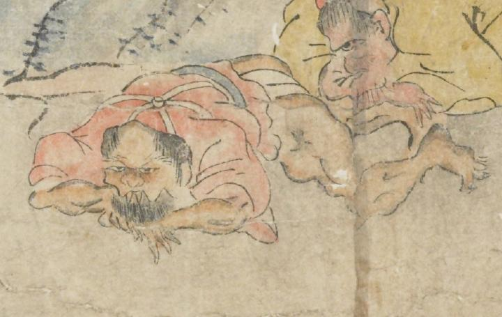

赤い着物を着た鬼。側頭部から髪を生やし、鼻が大きく、上顎から長い牙を覗かせているように見える。顎ひげが黒々と生えている。襷掛けで、着物の裾がめくれ、白い褌が見えている。うつ伏せに倒れている。
著作者：坂本弥一郎徳定／出典：親書誌：U426_nichibunken_0080：伊吹山酒呑童子絵巻；イブキヤマシュテンドウジエマキ／日付：2007／資源識別子：U426_nichibunken_0080_0009_0003
Copyright (c)2010- International Research Center for Japanese Studies, Kyoto, Japan. All rights reserved.